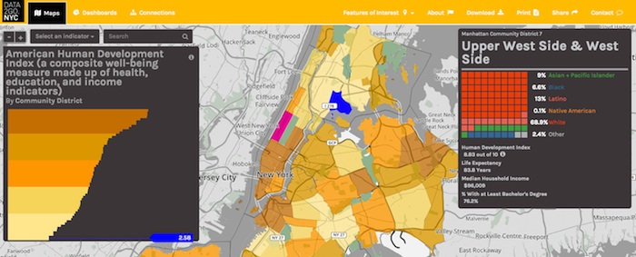
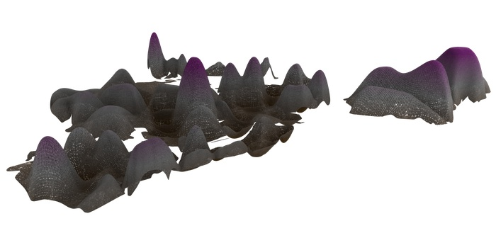
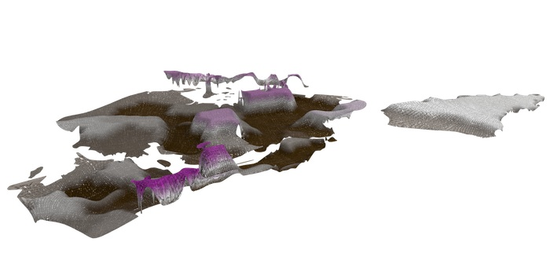
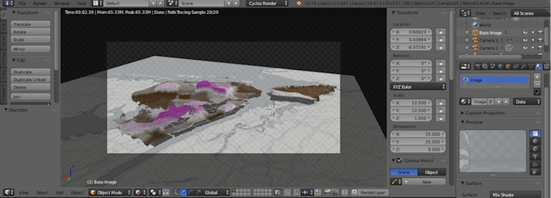
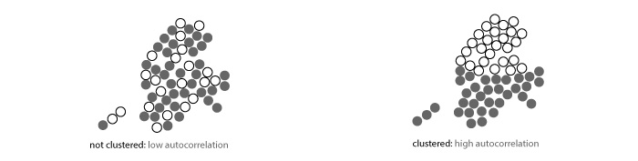
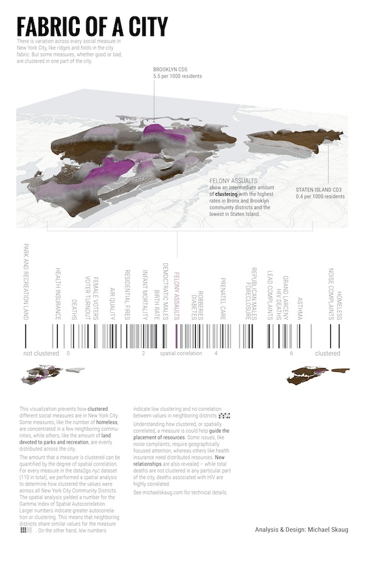
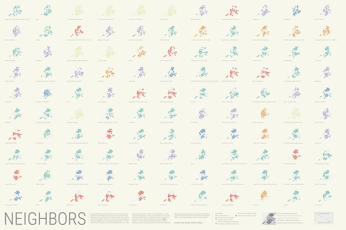

I decided to take part in the data2go.nyc visualization challenge. The idea is to showcase the open dataset collected by Measure of America and presented at data2go.nyc. It's an extensive data set, with over 100 social and demographic metrics collected at the city, borough and community district levels. The interactive site they put together is really good:

My initial thought was to build an interactive piece, similar to some of the other things I've done, but everything I came up with seemed a little too predictable. And the guidelines for the visualization challenge were quite general, so I decided to take this opportunity to do something different, at least for me.
For some other projects, I've been thinking about force-directed graphs and how the forces can be encoded to represent data. Typically they're modelled as a collection of 1-dimensional elastic springs. But how about a 2-dimensional elastic sheet? I wanted to represent the surface of New York City as a collection of elastic patches, one for each community district, and apply a force to each patch based on data for that district. I was envisioning something like a quilt, where each patch was deflected up or down depending on the data and by there would be cooperativity between the forces—neighboring districts with similar values would deflect even more. This is as close as I got:

There were several problems with this approach. The most significant is that there is no simple relationship between the applied force and the deflection of an elastic sheet and this is precisely how I wanted to encode the data. Intuitively, the deflection depends not only on the force, but the size of the patch. I found that there is roughly a deflection~size^(4/3) dependence, but in reality it's more complicated than that. I settled on a less sophisticated method— each patch was deflected by a set amount, no simulation required.

All of the 3D modelling of elastic deflection was done with Blender. It takes some getting used to, but Blender is incrediby powerful, it can be scripted with Python and it handles complicated physics simulations, even though that's not it's primary purpose.

Having visualized the city as an undulating piece of fabric, I wanted to quantify how "rough" the surface was and how this roughness was related to the different measures in the dataset. To do that, I calculated the spatial autocorrelation for each measure. This tells you how clustered each measure is or how similar neighboring districts are.

I performed the spatial analysis with the PySAL library in Python. I used the Gamma Index of spatial autocorrelation. You can see the code here.
The first finished graphic:

While working on the first version, I came up with another concept and I just couldn't help myself. The concept is similar, focusing on the spatial correlation or clustering of each metric, but here the autocorrelation analysis was performed on a simplified binary map of each measure. For every measure, each community district was assigned a value of +1 or -1 depending on if it was above or below the median value for that measure. Here, each little graphic for each measure is ordered according to the value of the Gamma Index:
